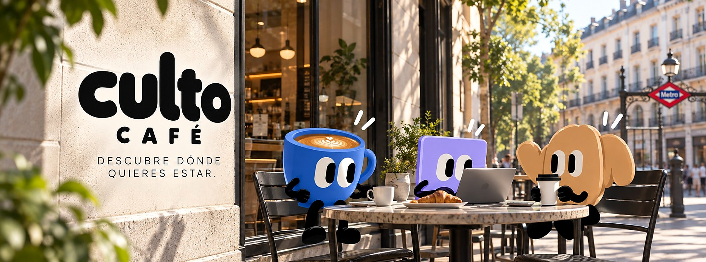

Free trial
€0/30 days
No card required
- Full, active listing
- Visible on the site and the map
- Try it before you decide

Malasaña, Madrid
Verified info for every independent coffee shop —bean origin, roast, brew methods and vibe—, a map that sorts by your location, and Culto, a WhatsApp guide that tells you where to have your next coffee.
Specialty coffee shops, each visited and verified
The Culto Café story
Culto finds the coffee shops, Neo pays attention to the details, and Moka connects the people searching with those already doing it right. This is how we see coffee in Madrid: our brand manifesto, told by the ones who represent it best.
How it works
The website is the shop window. Culto, on WhatsApp, is where the recommendation happens — no app, no account.
Message CultoFilter by neighbourhood, by what you're up to —work, study, meet up, tasting— and by Wi-Fi, terrace, dogs or price. Every listing has bean origin, roast, methods and prices.
Turn on your location and the coffee shops sort by distance. The nearest one is highlighted, with a one-tap button for directions.
Tell it what you feel like —"somewhere quiet to work near Plaza de San Ildefonso"— and it recommends by taste match, not just distance.
The coffee shops
Specialty coffee shops across Malasaña, verified one by one. Filter, check the map and sort by how close they are to you.
Prices are indicative and each menu may vary. Map coordinates are approximate to street level.
Looking for somewhere quiet to work all morning, around Malasaña 👀
Try Misión Café (C/ de los Reyes, 5). Spacious, bright, jazz playing and sockets around the room. Hola Coffee beans and an in-house bakery. Opens at 8:00. Want directions?
Perfect. And somewhere with a terrace for the weekend?
La Bicicleta Café, on Plaza de San Ildefonso — it has a terrace and it's built for settling in ☕
Meet Culto
Culto is the Culto Café guide. It doesn't improvise like a generic search: it answers only with verified data from the coffee shops, with real coffee judgement —roasts, methods, vibe— on the WhatsApp you already use.
About
Culto Café is a discovery and loyalty platform for specialty coffee shops in Madrid. We connect people looking for a great coffee with the independent shops that genuinely do it well, through info verified shop by shop and a conversational guide.
The model is simple: people use it for free; coffee shops get visibility and loyalty tools closer to what the big chains have. We treat data with the same care we put into curating each listing.
For coffee shops
We give you visibility with people who look for quality, and loyalty tools within reach. People use it for free; you show up where it matters.
€0/30 days
No card required
€15/month
€150/year · 2 months free
€29/month
€290/year · 2 months free
€49/month
€490/year · 2 months free
Secure card payment. No commitment: cancel any time. Prices exclude VAT.
FAQ
Culto Café is a directory of specialty coffee shops in Madrid (starting in Malasaña) with a conversational recommender on WhatsApp. It's free for people looking for coffee; coffee shops pay from €15/month to appear verified.
There are 4 plans: Free trial (€0/30 days), Presence (€15/month), Featured (€29/month) and Partner (€49/month). All include a verified listing on the site and the map; higher plans add priority in Culto's recommendations and extra visibility.
No. The 30-day free trial doesn't ask for any payment details, just your coffee shop's sign-up.
You message Culto on WhatsApp describing what you're after — a quiet spot with wifi, a pet-friendly terrace — and it replies with verified coffee shops that match, instead of improvising like a generic search engine.
Yes. No paid plan has a minimum commitment: you can cancel any time.
We currently operate exclusively in Malasaña (Madrid). We will evaluate a future expansion to other neighborhoods and cities as the project grows.
Contact
Got a question, an idea or something to tell us? Leave us a message and we'll reply by email.